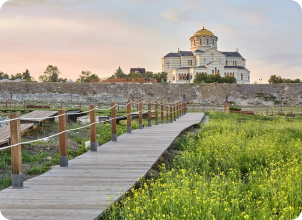
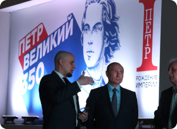

Отчетность фонда
О ведении деятельности
Вы находитесь на самой важной для нас странице, где в соответствии с правилами хорошего тона и заботе о репутации мы будем размещать отчетные документы, рекомендательные письма и фотографии.
Реконструкция и музеефикация Херсонеса Таврического
Фонд Моя история.
Итоги 2019
Новости
Единый урок «Моя История» прошёл в школах Донбасса
На нём школьникам рассказали о неразрывной исторической связи
России и юго-западных земель, включающих в себя территории
Донбасса, Крыма, Северного Причерноморья и напомнили о важности
сохранения исторической памяти и её роли в формировании личности.
07.09.2022
Поделиться

Поздравление И.В. Есина к 130-летию "Херсонеса Таврического"
Глава Фонда Иван Есин в своём телеграм-канале "Есин, на связи"
поздравил Государственный музей-заповедник с 130-летним юбилеем
Глава Фонда Иван Есин в своём телеграм-канале "Есин, на связи"
поздравил Государственный музей-заповедник с 130-летним юбилеем
09.08.2022
Поделиться

Владимир Путин ознакомился с выставкой «Пётр I. Рождение
Империи»Таврического"
Мультимедийную выставку-погружение «Пётр Первый. Рождение империи»
посетил Президент России В.В. Путин. Новую экспозицию руководителю
страны показал директор Фонда поддержки гуманитарных наук "Моя
история" и исторического парка "Россия-Моя История" Есин Иван.
07.09.2022
Поделиться